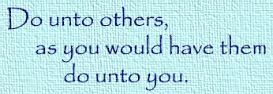

This page is designed to give the student an overview of the concept of netiquette and how it affects online communication. Each student should complete the quiz on netiquette by the end of this lesson.
Formal: Used when addressing someone with authority over you, like a teacher or a supervisor. Use complete sentences with correct capitalization and punctuation. Avoid using text abbreviations and slang terminology.
Informal: Used when addressing a colleague or possibly a parent or older family member. More relaxed than formal communication. Occasional text abbreviations and emoticons may be acceptable, but you should still focus on correct spelling and grammar.
Familiar: Used when communicating with close friends. Many "netizens" like to use common text abbreviations and emoticons to save time. Even so, spelling and grammar errors can lead to miscommunication, so proofread before sending to make sure the message makes sense.
The term netiquette is a contraction for the term "network etiquette." It is used to describe commonly-accepted rules that users should follow when using Internet technology to communicate with someone else.
The most important rule: Don't say something to someone online if you wouldn't say it to them in person.
Whenever you are communicating with someone else over the Internet, remember that they often see you only through the words you choose to use. Focus both on what you want to say, and on how you say it.
Spelling and grammar are important. If there are too many errors, the person reading your message may not understand what you are saying. Some misspellings can even completely change the meaning of your message; for example, compare the sentence "I am now at school" to "I am not at school."
Use correct capitalization. Putting your text in ALL CAPS is the equivalent of shouting, and someone reading a message in all caps may believe you were angry when you wrote the message. Not using any capital letters at all can make you look lazy.
Pay attention to punctuation. A period helps the reader know when you have come to the end of a sentence, so they can take a mental breath between thoughts. Apostrophes are important to know if the word is possessive or plural--they mean different things.
Reread what you have written before you hit the SEND button. This gives you the chance to catch spelling errors and missing words, but you should also look at the tone of the message. The person reading your message won't know if you are tired or angry or annoyed, but the text can give that impression if the style is too direct or does not include enough information.
Never send a message (by email or messaging service) when you are overly emotional. It may feel good to write out an email while you are very angry or upset, but don't put an address in the TO box if you do this. If there is no address, you can't send it by accident. You can also choose to use the SAVE button to save a draft of the message. If you save the message, you can come back to it a day or two later when you have calmed down, then revise or delete it at that point.